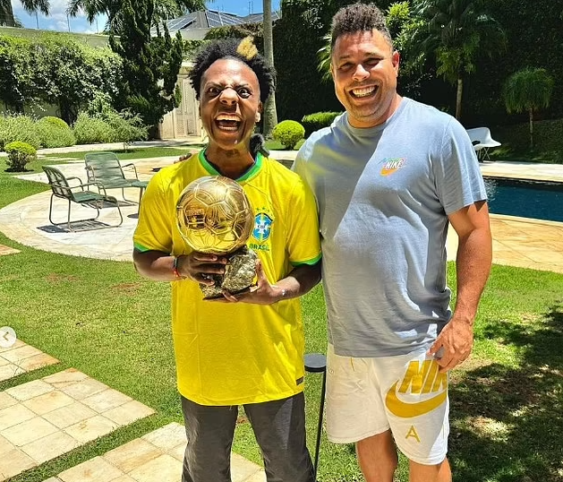

<!DOCTYPE html>
<html lang="en">
<head>
    <link rel="apple-touch-icon" sizes="180x180" href="favicon_package_v0.16 2/apple-touch-icon.png">
    <link rel="icon" type="image/png" sizes="32x32" href="favicon_package_v0.16 2/favicon-32x32.png">
    <link rel="icon" type="image/png" sizes="16x16" href="favicon_package_v0.16 2/favicon-16x16.png">
    <link rel="manifest" href="favicon_package_v0.16 2/site.webmanifest">
    <link rel="mask-icon" href="favicon_package_v0.16 2/safari-pinned-tab.svg" color="#5bbad5">
    <meta name="msapplication-TileColor" content="#b91d47">
    <meta name="theme-color" content="#ffffff">
    <meta charset="UTF-8">
    <meta name="viewport" content="width=device-width, initial-scale=1.0">
    <title>IShowSpeed</title>
    <link rel="stylesheet" href="./style.css">
</head>
<body>
    

    </html><H1 class="title1"><i><u>IShowSpeed</u> ⚡️</i></H1>
<p>

</p>
<p class="title">➢ IShowSpeed, born Darren Watkins Jr., has swiftly emerged as one of the most electrifying and influential figures in the streaming and digital entertainment world. His journey began on platforms like YouTube and Twitch, where his exuberant personality and genuine interactions quickly garnered a dedicated following. Known for his high-octane energy, unfiltered reactions, and a knack for comedic timing, Speed's content spans gaming streams, live reactions, vlogs, and engaging skits. His ability to keep viewers on the edge of their seats with unpredictable and lively performances has set him apart in a crowded space. One of the most compelling aspects of IShowSpeed's appeal is his authenticity. He shares his personal experiences, triumphs, and challenges with his audience, creating a bond that feels more like a friendship than mere viewership. This relatability, coupled with his transparent and often humorous take on life, has endeared him to millions. Speed's content often reflects his passions, most notably his love for football.
     This passion has not only been a theme in his streams but also led to high-profile interactions, including a memorable meeting with football legend Cristiano Ronaldo. This encounter, a dream come true for Speed, highlighted the bridging of worlds between traditional sports and digital media, showcasing the reach and influence of modern-day content creators. Beyond entertainment, Speed has also made strategic moves in the business realm, aligning with brands like Prime Hydration, co-founded by social media icons Logan Paul and KSI. This partnership emphasizes his commitment to promoting a healthy, active lifestyle, resonating with his youthful and energetic personality. 
    </p>
<figure>
    
    <figcaption class="w">IShowSpeed with his new CR7 Lamborghini</figcaption>
</figure>
<p>


</p>


<br></br>


<br></br>
<table align="center" cellspacing="20px" cellpadding="5px" border="1" cellpadding="2" class="de">
    <caption align="Top" class="table" style="color:  #9c328b;"><i> IShowSped Details</i></caption>  
    <br></br>
    <br></br>
    <tr>
        <th bgcolor="#09d1f0">Aspect</th>
        <th bgcolor="#09d1f0">Details</th>
        <th bgcolor="#09d1f0">Specail Highlighy</th>
        <th bgcolor="#09d1f0">Notable Traits</th>
        <th bgcolor="#09d1f0">Fun Fact</th>

    </tr>

    <tr>
        <td>Full Name</td>
        <td>Darren Watkins Jr.</td>
        <td>Rapid rise in popularity</td>
        <td>Engaging with fans</td>
        <td rowspan="2">Known for distinctive catchphrases</td>


    </tr>

    <tr>
        <td>Online Alias</td>
        <td>Ishowspeed</td>
        <td>Millions of subscribers on YouTube and Twitch</td>
        <td>Energetic and humorous personality</td>
    </tr>
    <tr>
        <td>Football Career</td>
        <td>Participates in charity matches</td>
        <td>Played in high-profile charity football matches</td>
        <td>Passionate about football</td>
        <td>He broke the internet with a fireworks prank.</td>
    </tr>


</table>

<br></br>
<br></br>
<br></br>


<H2 class="cr7"><u>IShowSpeed met Cristiano Ronaldo CR7 </u></H2>
<br></br>
<p class="inesh">
<i> ➢ IShowSpeed, the energetic and passionate streamer, experienced a dream come true when he met his idol, Cristiano Ronaldo. This moment was a testament to Speed's unwavering admiration for the football legend, often showcased in his streams and social media posts. The encounter between Speed and Ronaldo was electric, capturing the hearts of fans worldwide. Speed's reaction was nothing short of ecstatic, embodying the pure joy and excitement of meeting a childhood hero. This meeting wasn't just a personal milestone for Speed but also a significant moment for his followers, who have witnessed his journey and dedication to the sport. The interaction highlighted Ronaldo's influence and the inspirational power he holds over young fans like Speed. It also underscored the cultural crossover between traditional sports and digital entertainment, where icons from different realms can connect and create memorable experiences. For Speed, meeting Ronaldo was more than just a fan moment; it was a symbol of his perseverance and the extraordinary reach of his platform. This encounter will forever be etched in his and his fan's memories, serving as a reminder of the limitless possibilities when passion and dedication converge.</i></p>
<figure>
    
    <figcaption class="cr177">IShowSpeed with Ronaldo CR7</figcaption>
</figure>


<br></br>
<hr size="20px">
    <h99 class="meat"><b><i><u>
IShowSpeed Reacts to his Dad's DissTrack!! 
</u> </h99></i></b>
    <br></br>
  
<video width="800" height="500" controls >
    <source src="./My Dad Made a Song About My Meat_.mp4" class="iphone">

</video>

</div>
    
<hr size="20px">


<br></br>
<H3 class="prime">IShowSpeed x Prime 🔥</H3>
<p></p>
<p></p>
<p class="n"> ➢ 
    IShowSpeed, the popular internet personality and streamer known for his vibrant and energetic persona, has joined the ranks of Prime Hydration's brand ambassadors. Prime Hydration, co-founded by social media giants Logan Paul and KSI, is a sports drink designed to offer superior hydration with a blend of electrolytes, antioxidants, and B vitamins. Speed's alignment with the brand highlights his commitment to maintaining peak performance, both on and off the screen. As a figure who embodies enthusiasm and resilience, Speed's collaboration with Prime Hydration resonates with his audience, encouraging them to stay hydrated and active. This partnership not only amplifies Prime's visibility among younger demographics but also aligns with Speed’s athletic endeavors, such as his passion for football. Together, Speed and Prime Hydration are set to inspire a new generation of fans to prioritize their health and fitness, while enjoying the vibrant and engaging content that Speed consistently delivers. This collaboration is a strategic move for both Speed and Prime Hydration, combining entertainment and wellness in a way that resonates deeply with their audiences.</p>
<figure>
    
    <figcaption> </figcaption>
</figure>
<hr size="20px">
<p class="i"><i><u>The ways of IShowSpeed earn money</u> 💸</i></p>
<ul type="square" class="udaya">
    <li>YouTube Ad Revenue and Sponsorships</li>
    
    <li>Donations and Subscriptions</li>
    <li>Merchandise Sales</li>
</ul>
<br></br>


<hr size="20px">
<h4 class="home"><i>IShowSpeed Home-Town</h4></i>
<iframe src="https://www.google.com/maps/embed?pb=!1m18!1m12!1m3!1d198059.58298223332!2d-84.70521178688347!3d39.136490326726964!2m3!1f0!2f0!3f0!3m2!1i1024!2i768!4f13.1!3m3!1m2!1s0x884051b1de3821f9%3A0x69fb7e8be4c09317!2sCincinnati%2C%20OH%2C%20USA!5e0!3m2!1sen!2slk!4v1721909975173!5m2!1sen!2slk" width="1200" height="500" style="border:0;" allowfullscreen="" loading="lazy" referrerpolicy="no-referrer-when-downgrade" class="map"></iframe>
<p class="j"><b>➤ IShowSpeed home town is Cincinnati, Ohio, U.S.A</b></p>
<br></br>

</p>


<ul type="square" class="udaya">
 
</ul>
<br></br>
<hr size="20px">

<p class="lal"><b><i>~This is the IShowSpeed most viwed YouTube video~</u></b></i>
    <ul>
        <a href ="https://www.youtube.com/watch?v=wYZux3BMc5k" target="_blank" class="link">Click Here</a>
    
    </ul>
    </p>
    <hr size="20px">

<h7 class="q"><i><b>~Fill up the below informations to register for the Ishowspeed massive giveaway~</h7></i></b>
<br></br>

<form action="/sybmit-form" method="POST">
<label for="fname"><b>First name:</b></label>
<input type="text" id="fname" name="fname" required><br></br>
<label for="lname"><b>Last name:</b></label>
<input type="text" id="lname" name="lname" required><br></br>
<label for="age"><b>Your  age : </b>    </label>
<input type="number" id="age" name="age" required><br></br>
<label for="phone number"><b>Phone No:</b></label>
<input type="tel" id="phone number" name="phone number" required><br></br>
<label for="email"><b>Email add:</b></label>
<input type="email" id="email" name="email" required><br></br>
<label for="dob"><b>Birthyear :</b></label>
<input type="date" id="dob" name="dob" required><br></br>
<hr size="20px">


<h123 class="big"><b><i> ~Answer to these three questions~</i></b></h123>
<br></br>

<label for="color" class="skin">1)What is the skin color of IShowSpeed:</label>
<input type="radio" id="white" name="color" value="white">
<label for="color">White</label>
<input type="radio" id="black" name="color" value="black">
<label for="black">Black</label>
<input type="radio" id="brown" name="color" value="brown">
<label foe="brown">Brown</label></lable><br></br>


<label class="car">2)What are the cars IShowSpeed has:</label><br>
<input type="checkbox" id="lam" name="I" value="lam">
<label for="lam">Lamborghini</label><br>
<input type="checkbox" id="t" name="I" value="t">
<label for="t">Tesla Cyber Truck</label><br>
<input type="checkbox" id="bmw" name="I" value="bmw">
<label for="bmw">BMW</label><br>
<input type="checkbox" id="ty" name="I" value="ty">
<label for="ty">Toyota Supra</label><br></br>

<label for="g" class="g">3) Which platform primarily Ishowspeed's streams?
</label>
<select id="g" name="g">
    <option value="Twitch">Twitch</option>
    <option value="YouTube">YouTube</option>
    <option value="Facebook">Facebook</option>
    <option value="Mixer">Mixer</option>


</select><br></b>
<br></br>


<hr size="20px">

<h39 class="cel"><u>The Celebrities Ishowspeed Has Met</u></h39>
<br></br>
<div id="flex-contanier">
    <div id="flex1"></div>
    <div id="flex2"></div> 
    <div id="flex3"></div>
    <div id="flex4"></div>
    <div id="flex5"></div>
    <div id="flex6"></div> 
    <div id="flex7"></div>
    <div id="flex8"></div>
    <div id="flex9"></div>
    <div id="flex9"></div>
    <div id="flex9"></div>
    <div id="flex9"></div>
   
  

</div>
<br></br>

<br></br>
<br></br>


<br></br>
<br></br>
<br></br>

<br></br>
<h55 class="football"><u>IShowSpeed football Career</u></h55>

<br></br>


<div id="grid-contanier">
    <div id="grid1" class="ball"><b>Name - IShowSpeed (Darren Watkins Jr.)</b></div>
    <div id="grid2" class="ball"><b>football position - Forward</b></div> 
    <div id="grid3" class="ball"><b>Club - Played in charity matches (Sidemen Charity Match)</b></div>
    <div id="grid4" class="ball"><b>Goals Scored - 1 Goal in the Sidemen Charity Match</b></div>
    <div id="grid5" class="ball"><b>Notable Moments - Scored a goal in the Sidemen Charity Match 2022</b></div>
    <div id="grid6" class="ball"><b>Style of Play - Energetic, passionate, and aggressive</b></div> 
    <div id="grid7" class="ball"><b>Popularity - Known for his football-related content on YouTube</b></div>
    <div id="grid8" class="ball"><b>Career Highlights - Participation in the Sidemen Charity Match, creating football content for his millions of followers</b></div>
     


</div>

<br></br>
<br></br>
<br></br>
<br></br>


<h990 class="random"><u>Top 8 random facts about IShowSpeed</u></h990>
<br></br>
<div id="flex-contanier2">
    <div id="flex1" class="j"> 1) IShowSpeed real name is Darren Watkins Jr., gained massive popularity through his energetic and entertaining gaming livestreams.</div>
    <div id="flex2" class="j"> 2) IShowSpeed is known for his unpredictable and often comedic reactions during live streams, making his content highly engaging.</div> 
    <div id="flex3" class="j">3) IShowSpeed started his YouTube career in 2017 but gained significant traction during the pandemic in 2020.    </div>
    <div id="flex4" class="j">4) IShowSpeed is a huge fan of Cristiano Ronaldo and frequently references him during his streams and videos.</div>
    <div id="flex5" class="j">5) IShowSpeed has collaborated with popular influencers like KSI, further boosting his online presence and follower count.    </div>
    <div id="flex6" class="j">6) IShowSpeed's love for football is evident, as he often plays and discusses it during his content.</div> 
    <div id="flex7" class="j">7) IShowSpeed Despite controversy and bans, IShowSpeed has continued to grow his fanbase and remains a polarizing figure.</div>
    <div id="flex8" class="j">8) IShowSpeed  launched his own merchandise line, featuring his iconic phrases and branding, popular among his fans.</div>

  

</div>
<br></br>
<br></br>
<br></br>
<br></br>

</body>